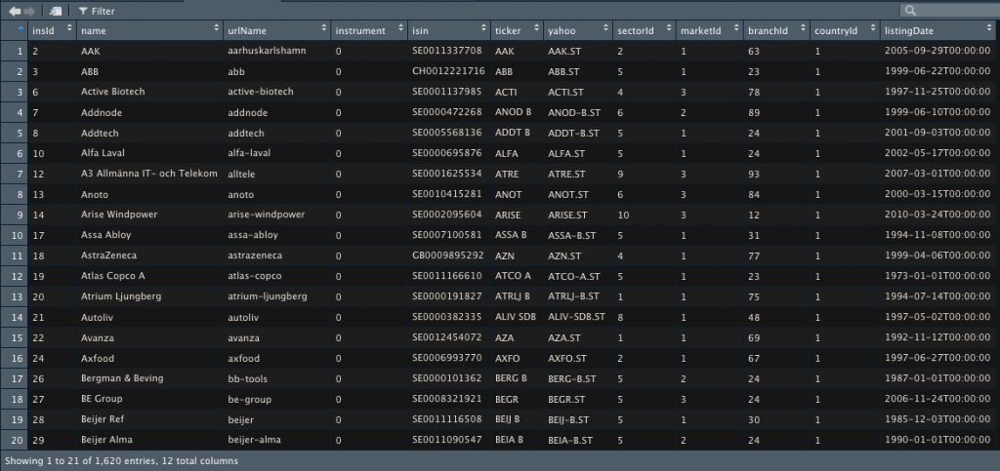
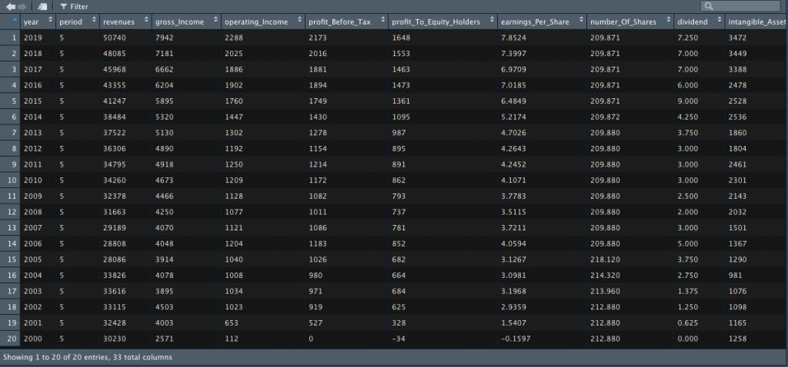
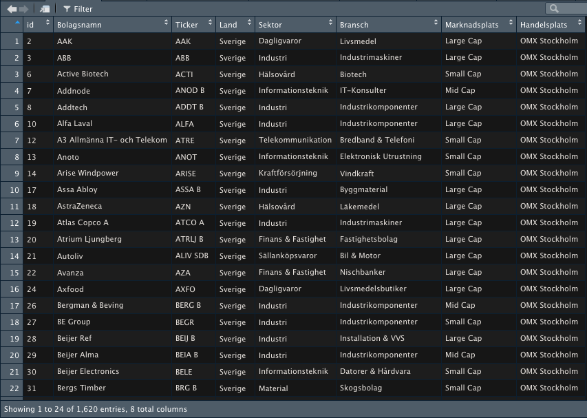

install.packages("devtools")Hur använder jag Börsdatas API?
Borsdata
API
HOW TO
Börsdatas API med det statistiska programmeringsspråket R och Rstudio. Vill du komma igång med att använda dig av automatiserad analys?
Hur använder jag Börsdatas API? För ungefär ett år sedan var det något som jag googlade och utan någon kunskap om APIer eller andra språk än R var jag helt strandad. Därför fick jag för mig att skapa detta R-paket, borsdata för att hjälpa alla framtida som behöver en lösning på detta problem.
Välkommen till denna guide, här går jag igenom grunderna för att använda Börsdatas API genom R-paketet borsdata! För att använda dig av paketet förväntar jag mig att du har två saker: 1. En API nyckel för att ansluta till Börsdatas API, denna får du genom att vara Börsdata Pro medlem samt att du har ansökt om en API nyckel. Se Börsdatas egen information här. 2. Du har installerat R på din dator
R-paketet borsdata finns på min github. Saknar du paketet “devtools”, så kan du installerade det genom att köra:
När du har devtools kan du installera borsdata paketet genom att köra:
devtools::install_github('jakobjohannesson/borsdata', build_vignettes = TRUE)Nu när du har paketet kan du ladda in det i din lokala miljö genom att köra:
library(borsdata)Alla funktioner som finns i borsdata paketet börjar med “fetch”, så testa att skriva fetch så ser du alla funktioner som finns att tillgå genom paketet. Om du inte redan har hämtat en API nyckel så gå din ‘min sida’ på börsdata.se för att hämta den. Ladda in din API nyckel i R genom att döpa en variabeln ‘key’ till din API nyckel som följande:
key<-"<API KEY>"Testa att allt fungerar som det ska! Kalla på alla instrument genom att skriva:
instruments<-fetch_instruments(key = key)
View(instruments)Resultatet kommer att bli en dataframe som innehåller alla olika instrument. Varje rad är ett bolag och varje kolumn är en variabel, där variablerna är bland annat id, bolagsnamn, ticker, handelsplats osv. Se screenshot nedan!

Från denna dataframe går det bland annat att läsa att Axfood på rad 16 har insID 24. Detta är id variabeln som används för att hämta information om det specifika bolaget i andra funktioner.
Hämta årsdata, kvartalsdata och R12-data
För att hämta årsdata om Axfood så behöver vi använda både nyckeln och id som följande:
axfood_year<-fetch_year(id = 24,key = key)
View(axfood_year)Resultatet blir en dataframe där varje rad är ett år och varje kolumn är en variabel, se bilden nedan.

Materialet som hämtas är i samma struktur som för alla andra bolag. Vidare går det att hämta information om rullande 12 månader samt kvartalsdata genom följande kod:
axfood_quarter<-fetch_quarter(id = 24, key = key)
axfood_r12<-fetch_r12(id = 24, key = key)Kvartalsdatan och rullande 12 månader är som längst 40 kvartal bakåt, alltså 10 år. Mer information om bolagets aktiekurs går det att kalla på dessa genom:
axfood_stockprice<-fetch_stockprice(id=24,key=key)
View(axfood_stockprice)Resultatet blir en dataframe där en rad är en dag och variablerna är datum, högsta kurs, volym med flera. Som längst finns det data 20 år tillbaka.
Transformera instruments
För att få mer information om vad variablerna betyder i instruments som vi har kallat på tidigare, så går det att hämta den informationen genom:
fetch_branches(key=key)
fetch_countries(key=key)
fetch_markets(key=key)
fetch_sectors(key=key)Med hjälp av funktionerna ovan går det att skapa en ny dataframe där det framgår tydligare vad varje bolag har för egenskaper som bransch, marknadsplats och land istället för att endast ange siffrorna för dessa. Installera paketet dplyr om du saknar det paketet.
# install.packages("dplyr")
library(dplyr)
ins<-fetch_instruments(key)
co<-fetch_countries(key)
branches<-fetch_branches(key)
sector<-fetch_sectors(key)
markets<-fetch_markets(key)
# Skapar en ny frame
ins<-ins %>% select(insId,name,ticker,marketId,branchId,sectorId,countryId)
# country
co<-co %>% rename(countryId=id)
ins<-left_join(x = ins,y = co,by="countryId")
# sector
bran<-sector %>% rename(sectorId=id)
ins<-left_join(x = ins,y = bran,by="sectorId")
# branches
bran<-branches %>% rename(branchId=id)
ins<-left_join(x = ins,y = bran,by="branchId")
# markets
bran<-markets %>% rename(marketId=id)
ins<-left_join(x = ins,y = bran,by="marketId")
# Skapar en ny dataframe
frame<-ins %>% select(insId,name.x,ticker,name.y,name.x.x,name.y.y,name,exchangeName)
colnames(frame)<-c("id","Bolagsnamn","Ticker","Land","Sektor","Bransch","Marknadsplats","Handelsplats")
frameResultatet kommer vara följande dataframe

Andra funktioner
Andra funktioner som finns att tillgå är att hämta senaste aktiekursen för alla bolag i hela listan. Vidare går det att hämta all information om akitesplits har genomförts. En funktion som finns också är att hämta när informationen kopplat till bolagen har uppdaterats som mest nyligen.
fetch_stockprice_last(key = key) # Hämtar senaste aktiekurserna
fetch_stocksplits(key = key) # Hämtar alla aktiesplittar
fetch_updated_instruments(key = key) # Hämtar information om senaste uppdateringarVidare finns det fler funktioner att tillgå som handlar om nyckeltal för varje bolag, detta kommer att beskrivas i kommande inlägg. Undrar du något om inlägget, kontakta mig då på min mail [email protected] eller min twitter @JakobBinzen, mer information om mig finns på startsidan.